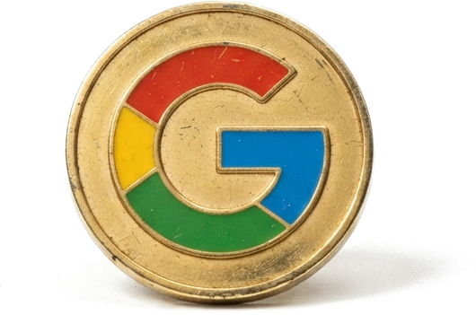

Carta del editor
Grok Bot falla

Soy Phil. Hago software. Esta es la primera revista que te escribo.
Trabajo con IA todos los días. La pruebo, la corrijo, a veces me convence. Quiero contártelo de cerca. Lo que me sirve. Lo que no.
Grok Bot a veces falla. Lo sigo usando. Por eso te escribo. Salió el 11 de agosto, todavía en prueba (beta). x.ai/bot
Esta semana, en Twitter, vi tres cosas que te cambian el día: el correo que ahora resume y agenda solo, la llamada que si tarda el cliente cuelga, y que desde octubre WhatsApp cobra las respuestas que antes no cobraba. Más abajo te las cuento. Al final te dejo el ranking de modelos del 14 de agosto (la lista de qué programa de IA va primero esta semana).
Phil
Phil · agosto 2026
Señal · tres notas · Google · OpenAI · Meta
Correo ahora agenda solo

El lunes abrí el correo y no era “otro modelo” (otro programa de IA). El 13 de agosto Google sacó Gemini 3.7 Flash. Spark —el asistente de Google en Gmail— se metió al correo y al calendario. Resume, propone horario, mueve. Si tu día vive en una hoja de Excel y en WhatsApp, el anuncio no te cambia el lunes.
Un modo más rápido
si tarda, el cliente cuelga · OpenAI · Ultrafast
El 13 de agosto OpenAI sacó Ultrafast (un modo más rápido del mismo modelo, GPT-5.6 Sol). Yo me quedé en la llamada. Un segundo de más y cuelgan. Un bot lento es peor que no tener bot.
WhatsApp cobra
en octubre · Meta · 1 oct 2026
Desde el 1 de octubre Meta vuelve a cobrar las respuestas que no son un mensaje guardado. No las cobraba desde el 1 de noviembre de 2024. Las tarifas de atención las publica el 1 de septiembre. No las adivino.
Tema central · Grok Bot · xAI · 11 ago 2026
Los bots se hablan
Creo varios. Se hablan. Yo doy el ok.

Ellos se hablan. Yo doy el ok.
Grok Bot salió el 11 de agosto, todavía en prueba (beta). x.ai/bot No lo uso como un chat más. Lo uso así: creo varios bots (compañeros de trabajo). Uno busca. Otro escribe. Otro revisa. Se conectan entre ellos. Se hablan. Se pasan el trabajo. Deciden. Vuelven a intentar. Mejoran. Yo no estoy en cada ida y vuelta. Yo doy el ok. Sin mi ok, no sale.
Yo lo uso para armar Wavys. La revista. Los textos. El día. A veces falla. Lo sigo usando. Porque cuando el trabajo deja de vivir solo en mi cabeza, el lunes ya no empieza desde cero.
Más noticias · 12 ago 2026 · Claude · Thrive · Amazon
Más noticias
05a · Claude
entra a tu navegador
Claude ahora trabaja adentro de Chrome, con tu usuario. No esperas a que te conecten el sistema. Lo usé para mirar una agenda en el navegador, sin que nadie una las piezas por detrás. El trabajo es cómo atiendes hoy.
05b · Thrive
2 mil millones no es otra app de chat
Thrive —con plata de OpenAI— levantó 2 mil millones para meter IA en empresas que ya atienden, ya facturan. No para sacar otra app de chat. La plata grande va a quien ya tiene un desorden, no a un chatbot nuevo.
05c · Amazon · Twitch
El video y el chat de Twitch entrenan su IA
Amazon, con Twitch: el video y el chat de los streamers entrenan su IA si no se salen. El jefe de producto lo dijo claro: si te tuvieran que pedir permiso, nadie aceptaba. Un dueño de clínica no está en Twitch. La misma regla puede llegar a tu lista de clientes y a tu chat: hay que decir que no, o dejarlo por escrito.
Tres notas de la misma semana: Claude ya trabaja en el navegador que usas. Thrive levantó 2 mil millones y no es otra app de chat. Y Amazon usa el video y el chat de Twitch si no te sales.
Ranking · 14 de agosto de 2026
Qué modelo de IA va primero
Contratapa
Nos leemos el viernes que viene
Si esto te sirve para mirar tu negocio —el chat, la hoja, el equipo— bien.
Si quieres te muestro cómo se ve eso en tu operación. Media hora y listo.